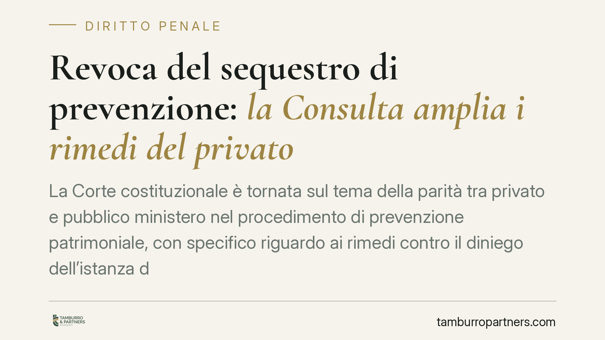

Revoca del sequestro di prevenzione: la Consulta amplia i rimedi del privato
La Corte costituzionale è tornata sul tema della parità tra privato e pubblico ministero nel procedimento di prevenzione patrimoniale, con specifico riguardo ai rimedi contro il diniego dell'istanza di revoca. Il tema tocca imprenditori, professionisti e familiari destinatari di misure patrimoniali e impone una lettura prudente in attesa della pubblicazione integrale della decisione.

Il contesto: sequestro di prevenzione e revoca
Il sequestro di prevenzione è una misura patrimoniale interinale, cioè temporanea e anticipata rispetto all'eventuale confisca. Può colpire beni di soggetti ritenuti pericolosi ai fini della prevenzione, anche in assenza di una condanna penale. È uno strumento ablativo (sottrae la disponibilità del bene) che incide fortemente sull'attività economica e sul patrimonio personale.
Occorre tenere distinti due piani che spesso vengono confusi. Il sequestro è la misura provvisoria, soggetta a un proprio regime di controllo e impugnazione nell'ambito del procedimento di prevenzione. La confisca è la misura definitiva: la sua revoca è disciplinata dall'art. 28 del D.lgs. 159/2011 (Codice antimafia), che consente la revisione del provvedimento definitivo in presenza di prove nuove o di determinati vizi.
Il nodo sollevato riguarda la disparità di trattamento tra le parti: la facoltà di impugnare il provvedimento che rigetta l'istanza di revoca non risultava riconosciuta al privato con la stessa ampiezza prevista per il pubblico ministero.
L'inquadramento normativo
Nel sistema del Codice antimafia il regime delle impugnazioni delle misure di prevenzione patrimoniali si costruisce in combinato tra più disposizioni. L'art. 27 del D.lgs. 159/2011 regola le impugnazioni dei provvedimenti in materia di sequestro e confisca con rinvio, per quanto applicabile, alla disciplina delle impugnazioni delle misure personali di cui all'art. 10. La revoca della confisca definitiva è invece oggetto dell'autonoma previsione dell'art. 28.
Il punto critico affrontato è la simmetria dei rimedi: quando si ritiene che il privato non disponga dello stesso mezzo di reazione riconosciuto all'accusa, si configura una possibile violazione del principio di parità delle parti e del diritto di difesa (artt. 111 e 24 Cost.).
Avvertenza di metodo. Al momento della redazione di questo contributo non risulta verificabile in via ufficiale l'esatta numerazione, l'oggetto e il dispositivo di una pronuncia della Corte costituzionale sul punto. Per rigore, questo articolo descrive la questione e il suo possibile impatto in termini generali, senza attribuire una ratio decidendi puntuale a una decisione non ancora consultabile nella pubblicazione in Gazzetta Ufficiale. La portata effettiva andrà valutata sul testo integrale.
Implicazioni pratiche
Se la direzione interpretativa fosse quella dell'ampliamento dei rimedi a favore del privato, il destinatario della misura disporrebbe di uno strumento in più per reagire al rigetto dell'istanza di revoca, riducendo l'asimmetria rispetto al pubblico ministero.
È però essenziale un chiarimento che evita false aspettative: l'impugnazione del diniego non garantisce l'esito favorevole. L'eventuale pronuncia amplierebbe il rimedio, non predeterminerebbe il risultato. In concreto significa avere accesso a un ulteriore grado di controllo, non ottenere automaticamente la restituzione del bene.
L'impatto riguarda in primo luogo chi subisce una misura patrimoniale nell'esercizio dell'attività d'impresa, i professionisti con beni vincolati e i familiari coinvolti in via riflessa dal provvedimento. Per queste figure la possibilità di contestare il diniego può incidere sulla continuità aziendale e sulla gestione del patrimonio.
Un aspetto da non sottovalutare è quello dei termini. Nel procedimento di prevenzione i termini per proporre impugnazione sono di norma perentori: la loro inosservanza comporta la decadenza dal rimedio. La misura esatta del termine dipende dalla disposizione concretamente applicabile e va verificata caso per caso sul provvedimento ricevuto.
Cosa fare in concreto
- Conservare l'intera documentazione relativa al sequestro, all'istanza di revoca e al provvedimento di diniego, verificando la data esatta di comunicazione o notifica.
- Verificare immediatamente il termine di impugnazione indicato nel provvedimento: nel procedimento di prevenzione i termini sono perentori e decorrono da momenti specifici.
- Distinguere il piano del sequestro da quello della confisca, perché i rimedi e le norme di riferimento non coincidono.
- Non attendere la pubblicazione integrale per impostare la strategia difensiva: è opportuno valutare per tempo la percorribilità del rimedio con un difensore.
- Richiedere una verifica puntuale della norma applicabile al proprio caso prima di proporre qualsiasi atto, evitando iniziative tardive o inammissibili.
---
Contributo informativo a cura di Tamburro & Partners - Avv. Giuseppe Tamburro. Non costituisce parere legale.
Ogni condominio ha una storia a sé.
Se gestisci un'amministrazione e vuoi un confronto su una specifica questione condominiale, scrivi allo studio. Ti rispondiamo entro un giorno lavorativo.